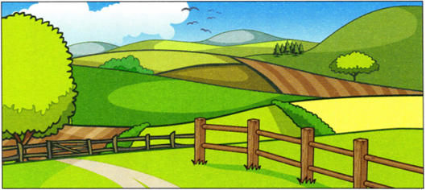

Part 4
Read the text. Choose the right words and write them on the lines.
The Countryside

Example
All countries in the world have countryside and cities.
Cities are busy and many people live there. The countryside is different. You find small villages and the roads
(1) have many cars on them.
(2) There are a lot plants and flowers in the countryside.
Farmers grow different kinds of food in the fields. People
(3) in villages stop to talk, and enjoy going long walks.
(4) Some people living in the countryside is boring because there aren't many things to do,
(5) some people love it because it is pretty and very quiet.